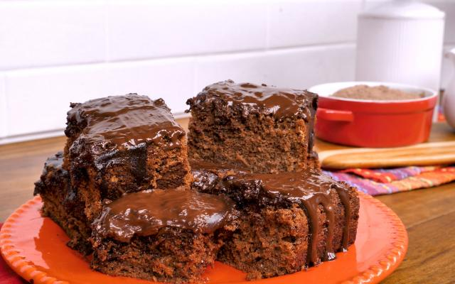

Bolo de Chocolate

Descrição
Um bolo de chocolate em que o foco é evitar que ele seja seco.
Ingredientes
- 3 xícaras de leite
- 2 xícaras de chá de farinha de trigo
- 1 colher de sopa de fermento em pó
- 2 xícaras de chá de açúcar
- 6 colheres (sopa) de chocolate em pó
- 6 ovos
- 2 colheres (sopa) de manteiga
- 1 xícara de chocolate em pó
Modo de preparo
Tempo estimado: 40m
Massa
- Em uma batedeira, bata as claras em neve.
- Acrescente as gemas, o açúcar e bata novamente.
- Adicione a farinha, o chocolate em pó, o fermento, o leite e bata por alguns minutos.
- Despeje a massa em uma forma untada e leve para assar em forno (180ºC), preaquecido, por 40 minutos.
Cobertura de chocolate
- Em uma panela, leve a fogo médio o chocolate em pó, a manteiga e o leite, deixe até ferver.
- Despejar quente sobre o bolo já assado.
Página Principal